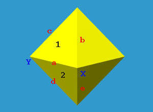
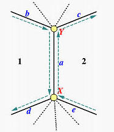
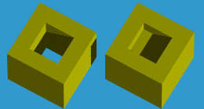
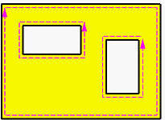
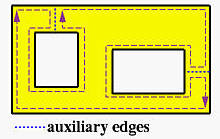

翼边数据结构（winged-Edge Data Structure） #
翼边数据结构是 B-rep （Boundary repesentation, 边界表示法）的一种数据结构，本文介绍如何使用翼边结构描述一个几何体。
翼边结构可以看作是线框模型（Wireframe Model）的一个扩展，也是使用 Edge 描述几何体。
Edge Table #
首先需要维护一个 Edge 表，表中记录了一个几何体所有的 edge 信息，每条 edge 信息需要包括以下内容：
- 与 edge 相关的两个顶点（vertices）
- 与它相关的左侧面（left face）和右侧面（right face）
- 当绕着与它相关的左侧面的所有 edge，沿逆时针遍历时，该 edge 的前一条 edge（predecessor edge）和后一条 edge（successor edge）。
- 当绕着与它相关的右侧面的所有 edge，沿逆时针遍历时，该 edge 的前一条 edge（predecessor edge）和后一条 edge（successor edge）。

以上图中的多面体为例，边 a 的起始点和终止点为：X 和 Y，它的左侧面为 2，右侧面为 1。与左侧面 2 相关的边为 a,d,e, 与右侧面 1 相关的边为 a,b,c。注意描述面的外轮廓边的顺序必须为逆时针，这种顺序能够很好的用右手定则描述面的朝向（法向量）。所以沿着 a 的左侧面 2 遍历时，a 的前一条 edge 为 e，后一条 edge 为 d，沿着 a 的右侧面 1 遍历时，a 的前一条 edge 为 c，后一条 edge 为 b。
总结，一个 Edge 表的每一条记录需要包含以下信息：edge name, start vertex, end vertex, left face，right face, predecessor edges，successor edges。

| Edge Name | Vertices Start | Vertices End | Faces Left | Faecs Right | Left-Traverse Pred | Left-Traverse Succ | Right-Traverse Pred | Right-Traverse Succ |
|---|---|---|---|---|---|---|---|---|
| a | X | Y | 1 | 2 | b | d | e | c |
Vertex Table 和 Face Table #
除了 Edge Table，还需要维护一个 Vertex Table 和 Face Table。这两个表相对比较简单，Vertex 只需要维护与 Vertex 相关的 Edge，边由哪两个顶点构成。Face Table 只需要维护与它相关的 Edge，面由哪些边围合而成。
通过 Edge Table，Vertex Table 和 Face Table，能够得到与体相关的拓扑信息，能够轻易知道任意一个顶点，一条边，一个面的相关连的信息。
有洞（hole）的面如何表示？ #
有很多几何体是有洞的，例如下面这种：

翼边结构如何表示呢？
有两种方式。第一种面的外环（outer loop）用逆时针描述，内环（inner loop）用顺时针描述。

另一种简单的方法是在每个内环和外环之间添加辅助边，如下所示。该辅助边的左面和右面将具有相同的面。这样，一个有孔的面就变成了一个单独的环，可以用翼边数据结构来表示。遍历循环时，由于左右面相同，因此可以轻松识别辅助边。

（完）